CS 180 Project 4: (Auto)stitching and Photo Mosaics
In this project, I stitched together and rectified some images.
Project 4A: Image Warping & Mosaicing
Part 1: Shoot & Digitize Images
I collected a ton of images of the past week for this project, here are the ones I ended up using.
In order to make images work well with the mosaic, I made sure to keep the center of projection as constant as possible. I also tried to find interesting geometries that would make finding corresponding points simple.
 |
 |
|
 |
In order to make images work well with rectfication, I made sure to have images that have a distinct rectangular shape in them.
Part 2: Recover Homographies
In order to recover the homographies, I set up an equation to solve for the 8 unknown variables in our transformation matrix, H.
Here's an example of how we want to be able to map points using H, and the matrix system we generate.
\[ \begin{bmatrix} wx' \\ wy' \\ w \end{bmatrix} = H \begin{bmatrix} x \\ y \\ 1 \end{bmatrix} \]
\[ \begin{bmatrix} wx' \\ wy' \\ w \end{bmatrix} = \begin{bmatrix} a & b & c \\ d & e & f \\ g & h & 1 \end{bmatrix} \begin{bmatrix} x \\ y \\ 1 \end{bmatrix} \]
\[ \begin{bmatrix} wx' \\ wy' \\ w \end{bmatrix} = \begin{bmatrix} ax + by + c \\ dx + ey + f \\ gx + hy + 1 \end{bmatrix} \]
\[ \begin{cases} ax + by + c = (gx + hy + 1)x' \\ dx + ey + f = (gx + hy + 1)y' \end{cases} \]
\[ \begin{cases} ax + by + c -gxx' -hyx' = x' \\ dx + ey + f -gxy' -hyy' = y' \end{cases} \]\[ \begin{bmatrix} x & y & 1 & 0 & 0 & 0 & -xx' & -yx' \\ 0 & 0 & 0 & x & y & 1 & -xy' & -yy' \end{bmatrix} \begin{bmatrix} a \\ b \\ c \\ d \\ e \\ f \\ g \\ h \end{bmatrix} = \begin{bmatrix} x' \\ y' \end{bmatrix} \]
\[ \begin{bmatrix} x_1 & y_1 & 1 & 0 & 0 & 0 & -x_1 x_1' & -y_1x_1' \\ 0 & 0 & 0 & x_1 & y_1 & 1 & -x_1y_1' & -y_1y_1' \\ x_2 & y_2 & 1 & 0 & 0 & 0 & -x_2 x_2' & -y_2x_2' \\ 0 & 0 & 0 & x_2 & y_2 & 1 & -x_2y_2' & -y_2y_2' \\ x_3 & y_3 & 1 & 0 & 0 & 0 & -x_3 x_3' & -y_3x_3' \\ 0 & 0 & 0 & x_3 & y_3 & 1 & -x_3y_3' & -y_3y_3' \\ x_4 & y_4 & 1 & 0 & 0 & 0 & -x_4 x_4' & -y_4x_4' \\ 0 & 0 & 0 & x_4 & y_4 & 1 & -x_4y_4' & -y_4y_4' \\ & & & & \vdots \end{bmatrix} \begin{bmatrix} a \\ b \\ c \\ d \\ e \\ f \\ g \\ h \end{bmatrix} = \begin{bmatrix} x_1' \\ y_1' \\ x_2' \\ y_2' \\ x_3' \\ y_3' \\ x_4' \\ y_4' \\ \vdots \end{bmatrix} \]
Since this is now in the form Ax = b with x as the unknown, I was able to use np.linalg.lstsq in order to solve the system. This worked well because I tended to use more than the minimum 4 correspondances, so I had an overdetermined system.
For Proj 4A, I had to manually assign correspondances. Here are the corresponding points I marked, using ginput with matplotlib.
 |
 |
| 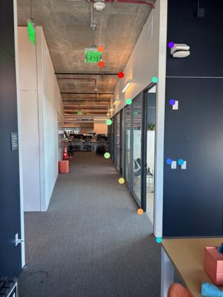 | 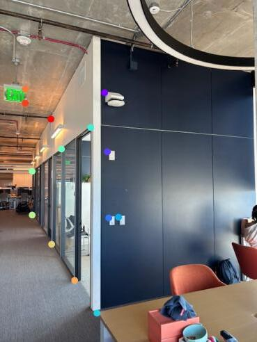 |
| 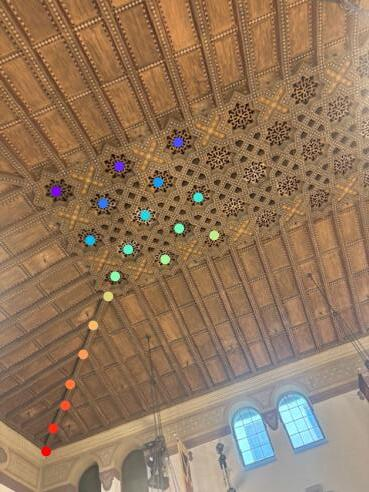 |
Part 3: Warp the Images
Then, I implemented the warpImage function. First, I computed the output shape of the resulting image by figuring out what coordinates the orignal corners of the image mapped to by transforming the points with the transformation matrix H. Once this shape was established, I figured out how to offset the warped image to make it fit in the frame. Then, I used inverse warping in conjuction with scipy.interpolate.griddata to fill in the image. I used nearest interpolation. Finally, I went back in and blacked out the pixels which were filled based on nearest pixel, but were actually not present in the orignal image. All together, this is an example of a warped image of Blackwell residence hall. I did it in both directions.
|
|
 |
|
Part 3 Examples: Image Rectification
For Part 3, Image Warping, 2 images with corresponding points were necessary. In this section, I rectified images based on known shapes. In order to do this, I marked the corners of a rectangular object in an image, and hardcoded the new actually rectangular points it should map to. I also decided to crop the image to just around the object of interest to speed up warping. Then, I computed the H matrix going from the corners to the rectangular coordinates. Finally, I applied my warpImage function. Here are two examples I got, sorry for the poor resolution!
Part 4: Mosaic
Finally, I figured out how to combine together images into image mosaics. In order to do this, I took a one-shot approach. First, I warped one of the images to match the shape of the other image. Then, I computed the desired output shape by seeing how far off the reference points were from the sides in the warped image and the reference image. Next, I filled in the appropriate parts of the output image with both the warped image and the reference image, using a feathering alpha channel to avoid strong edge artifacts. Here are my three example mosaics!
|
|
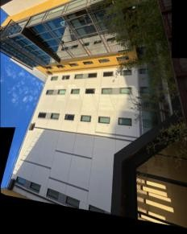 |
|
 |
|
 |
Project 4B: Feature Matching for Autostitching
Part 1: Harris Corners
I used the provided starter code to detect the Harris corners for images. I played around with the sigma and min_dist params and decided to use sigma=1, min_dist=3 to get reasonable corners. This is what they looked like:
| 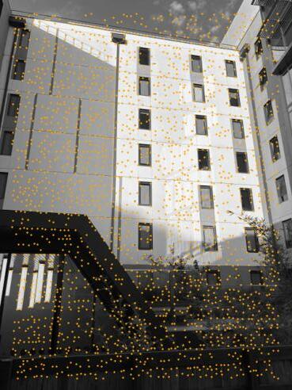 | 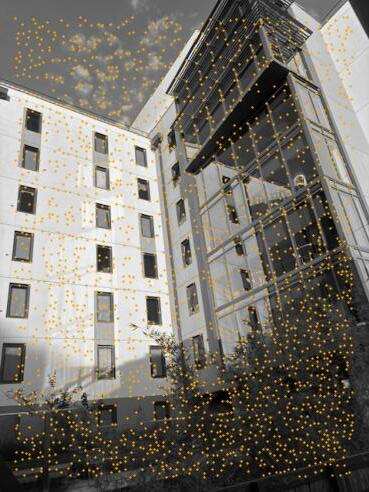 | 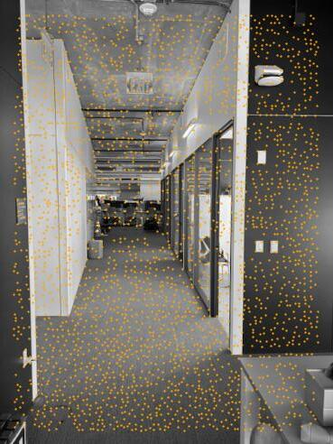 | 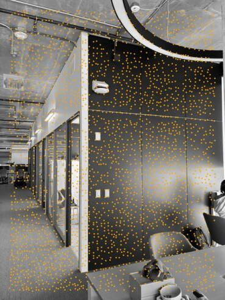 | 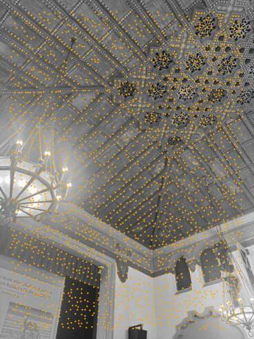 |  |
Of course, this was too many corners, and they were poorly distributed, so I implemented adaptive non-maximal spuppression, where I calculated the maximum supression radius for each corner, and then added more and more of the strongest corners until I had enough. I chose to stop at 500 of the brightest, best-spaced corners, just like in "Multi-Image Matching using Multi-Scale Oriented Patches” by Brown et al. After filtering, I was left with:
| 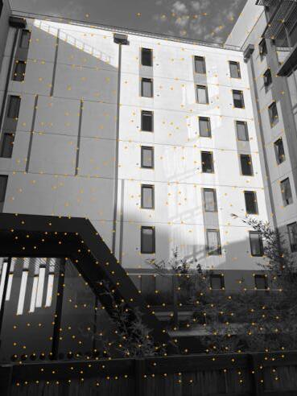 | 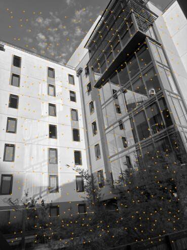 | 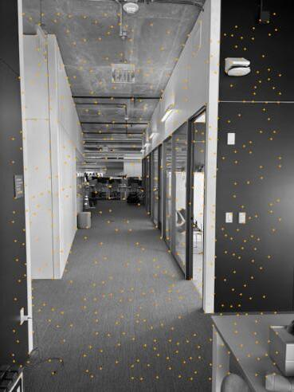 | 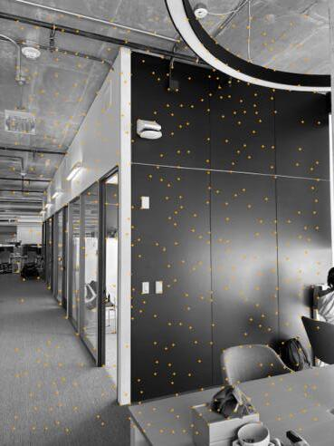 | 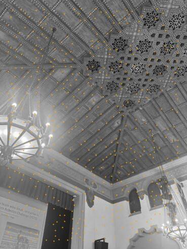 | 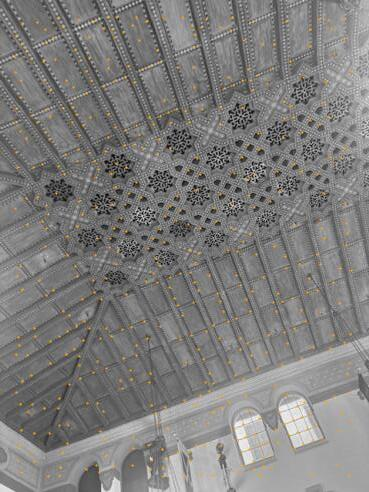 |
Part 2: Feature Descriptors
In order to use these corners, I computed feature descriptors around each one by sampling 8 pixels, spaced out by 5 pixels from the center of the point. These features were then flattened and normalized to have a mean of 0 and a standard deviation of 1 for more consistent distance computation. Here are some examples of features and their matched features (all will be explained in the next section) for all 3 of the mosaics I created.
| 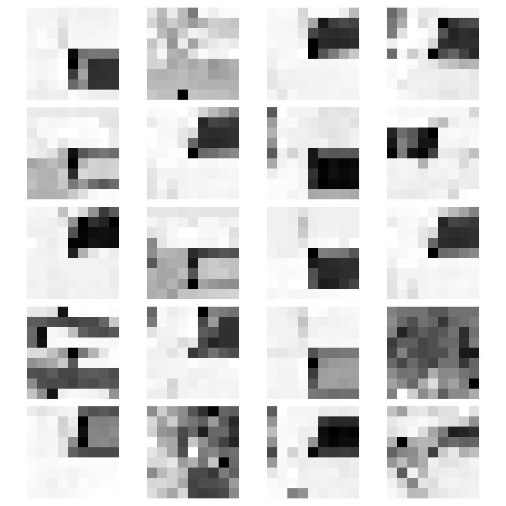 | 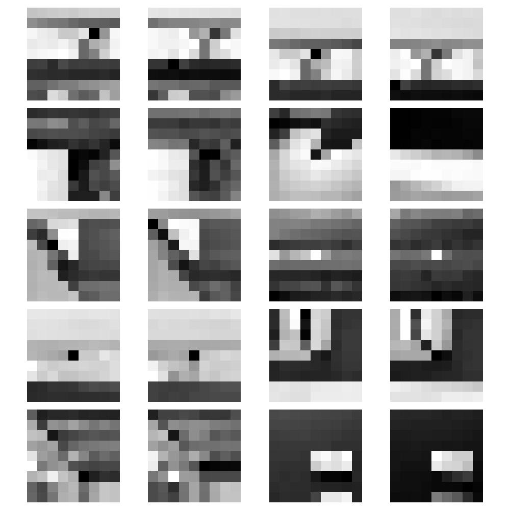 | 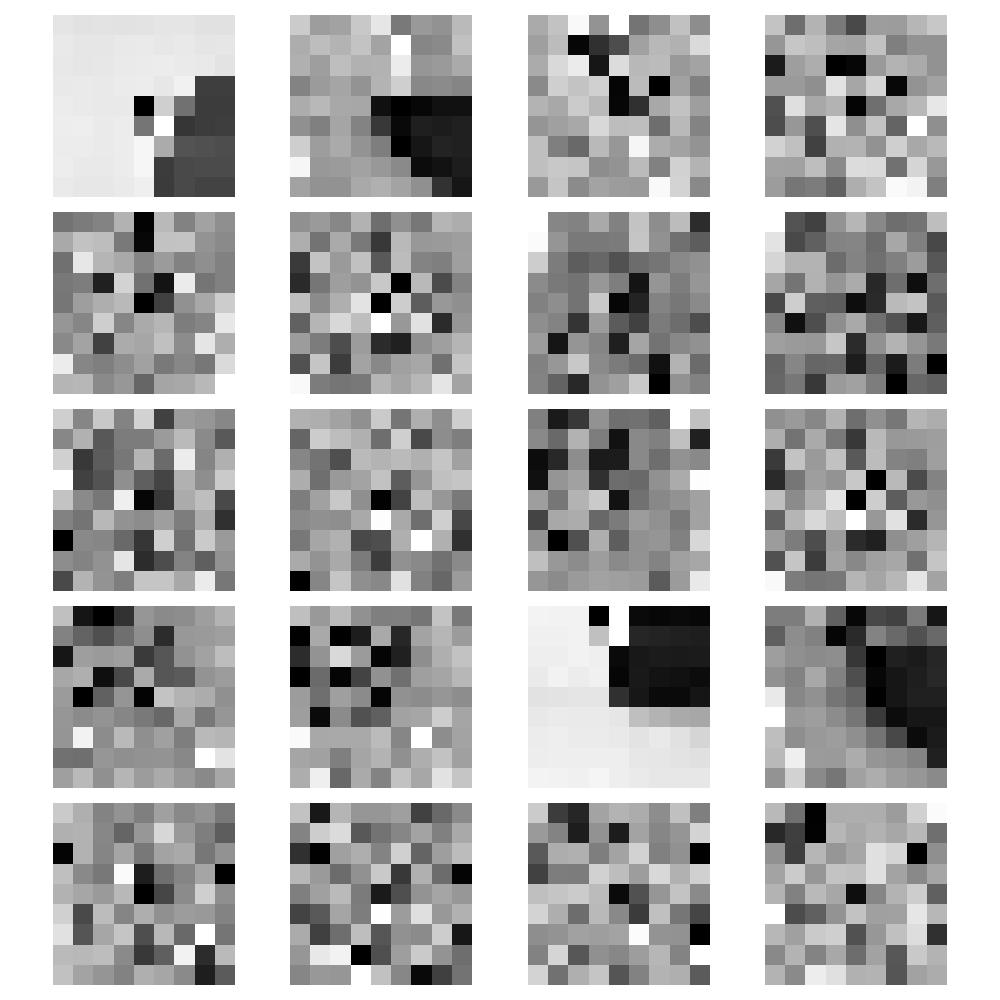 |
Part 3: Feature Matching
After the corners had their features described, I matched up corresponding ones. In order to do this, I used Lowe thresholding - if a combination of features had a suspiciously similar second nearest neighbor, that means the first nearest neighbor also likely isn't that compelling of a match, and can be omitted. Here are the corners I ended up with by matching the most similar features, and discarding features with conflicting information.
| 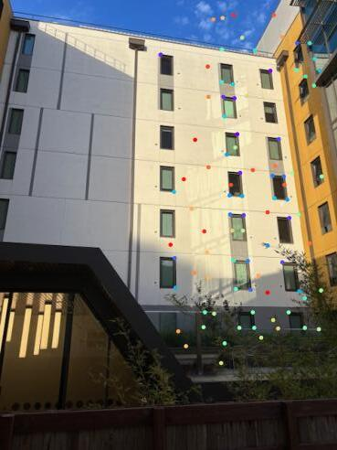 | |
| 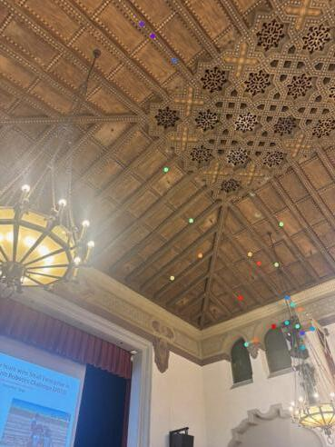 | 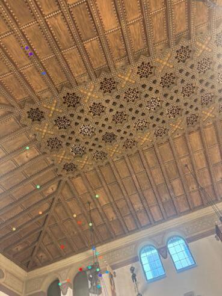 |
Part 4: RANSAC
Now that I had a reasonable number of matching points, I implemented RANSAC to compute a homography. In order to implement RANSAC, I looped through 1000 combinations of 4 separate correspondances, and for each of those, I computed the exact homography matrix. Then, I figured out how many of the correspondances worked well under that homography matrix by assessing how many points were properly transformed to within a distance of 50 from their desired output value. The combination of 4 points that yielded the greatest number of points with a successful mapping was deemed the winner. All the inliers for that homography were used to calculate the final, best homography for the mosaic. In this way, images were automatically stitched together.
Part 5: Mosaic Comparison
Here are the generated mosaics. The original one which was computed by my manual point mapping is on the left, and the one which was automatically stitched together is on the right.
| 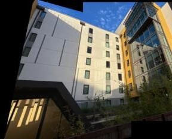 | |
|
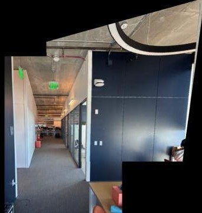 |
|
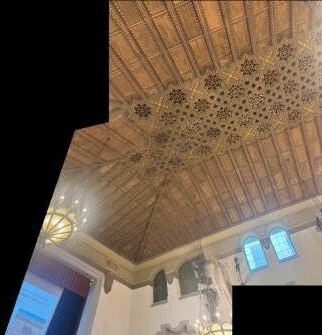 |